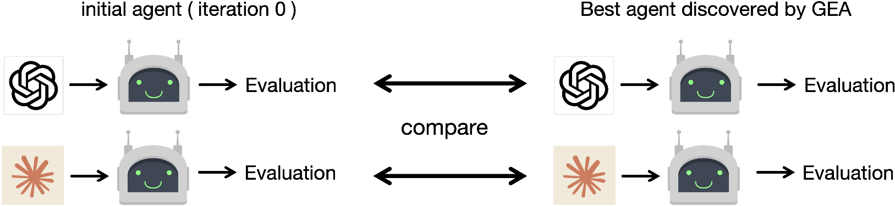
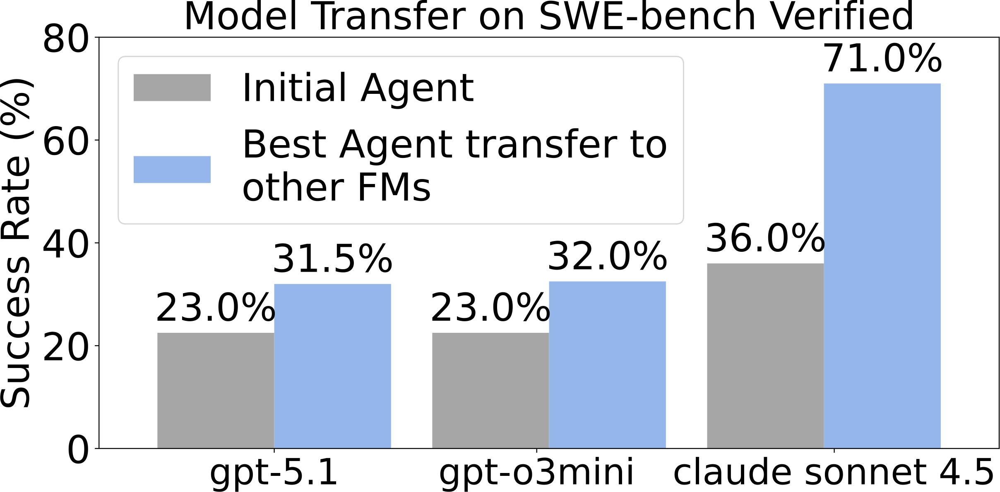
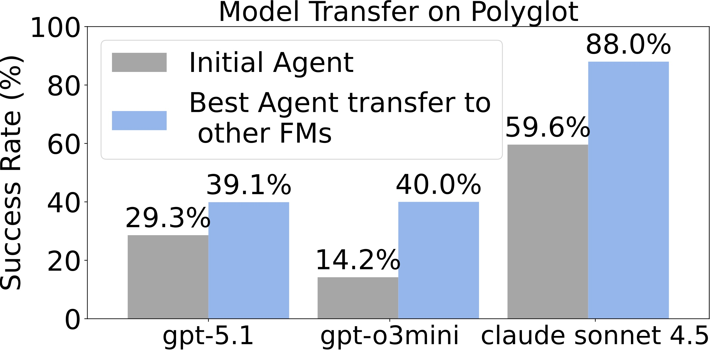
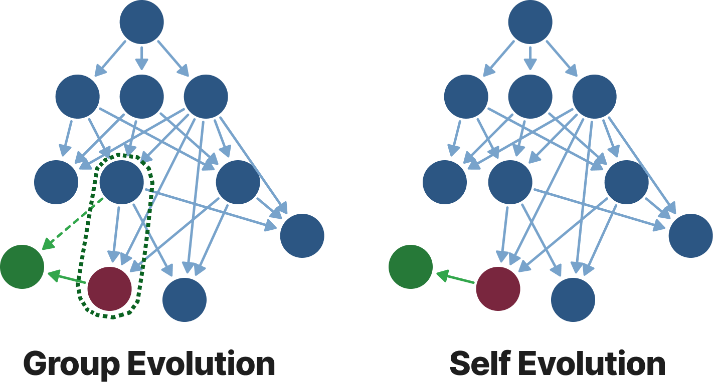
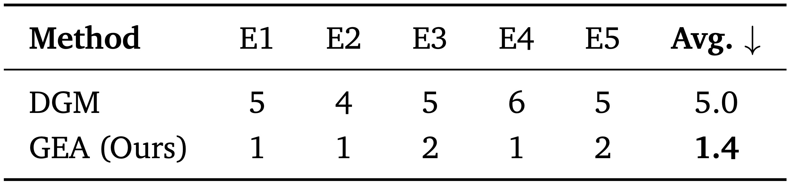

Group-Level Evolution: Shifts the evolutionary unit from isolated individual agents to collaborative groups, enabling structured experience reuse across branches.
Experience Sharing: Experience sharing → cumulatively consolidating exploratory diversity into long-term progress.
Superior Performance: Outperforming SOTA self-evolving method and matching top human-designed coding agents.
Generalizable & Robust: Transfers across different foundation models and demonstrates stronger robustness.
Open-ended self-improving agents can autonomously modify their own structural designs to advance their capabilities and overcome the limits of pre-defined architectures, thus reducing reliance on human intervention. We introduce Group-Evolving Agents (GEA), a new paradigm for open-ended self-improvement that treats a group of agents as the fundamental evolutionary unit, enabling explicit experience sharing and reuse within the group throughout evolution. Unlike existing self-evolving paradigms that adopt tree-structured evolution, GEA overcomes the inefficient utilization of exploratory diversity caused by isolated evolutionary branches. We evaluate GEA on challenging coding benchmarks, where it significantly outperforms state-of-the-art self-evolving methods (71.0% vs. 56.7% on SWE-bench Verified, 88.3% vs. 68.3% on Polyglot) and matches or exceeds top human-designed agent frameworks (71.8% and 52.0% on the two benchmarks, respectively). Analysis reveals that GEA more effectively converts early-stage exploratory diversity into sustained long-term progress, achieving stronger performance under the same number of evolved agents. Furthermore, GEA exhibits consistent transferability across different coding models and greater robustness, fixing framework-level bugs in 1.4 iterations on average, compared to 5 iterations for self-evolving methods.
Parent Group Selection + Open-Ended Group Evolution

At each iteration, GEA selects a parent group using a Performance-Novelty criterion.
The key idea is to balance immediate task-solving competence with long-term evolutionary diversity and potential.

The parent group jointly produces an offspring agent group by aggregating
evolutionary experiences into a shared experience pool.
This pool — including tool-use traces, patches, and successful strategies —
guides each agent's adaptive improvements (Figure 2).
Through explicit experience sharing, agents reuse complementary discoveries
and continuously refine their codebases while maintaining evolutionary diversity.
Four complementary analyses evaluating GEA's performance, interpretability, transferability, and robustness.

GEA vs. SOTA Open-Ended Self-Improving Methods
GEA demonstrates substantial performance improvements over DGM (71.0% vs. 56.7% on SWE-bench Verified; 88.3% vs. 68.3% on Polyglot). Notably, GEA exhibits faster and more significant improvement than DGM in the mid-to-late evolutionary stages, suggesting that experience sharing unlocks compounding gains over time.
GEA vs. SOTA Human-Designed Coding Agents
Using meta-learning without any human intervention, GEA automatically evolves agent frameworks that match or surpass carefully engineered human designs (71.0% vs. 71.8% on SWE-bench; 88.3% vs. 52.0% on Polyglot).
Group-level evolution substantially outperforms isolated tree-structured self-improvement, both against automated baselines and human-engineered agents.

Figure 4. Evolution analysis of tool discovery and integration over iterations. Each row (T1–T9) corresponds to a key tool-level functionality. ● Blue = discovered but not yet integrated; ● Red = integrated into the best-performing agent.

Table 1. Comparison of performance (Success Rate) and ancestor integration across the Top-k agents on SWE-bench Verified. Performance is reported as the worst-case (minimum) success rate among the top-k agents. Ancestor Count denotes the count of unique historical agents integrated into the solution. Notably, GEA's worst-case top-5 performance (58.3%) exceeds the single best agent from DGM (56.7%).
GEA more effectively converts early-stage exploratory diversity into sustained long-term progress, and consistently maintains a high-quality agent pool rather than a single lucky survivor.



GEA discovers model-agnostic agent-level improvements that generalize across different foundation models.

Figure 5. Robustness test comparing GEA vs. self-evolution under injected framework-level bugs.

Table 2. Robustness to framework-level bugs. Number of evolution iterations required to repair injected bugs across five independent trials (E1–E5). GEA repairs bugs in 1.4 iterations on average vs. 5 iterations for DGM.
Experience sharing enables significantly stronger robustness — GEA self-repairs bugs ~3.5× faster than isolated self-evolution.
@misc{weng2026groupevolvingagentsopenendedselfimprovement,
title={Group-Evolving Agents: Open-Ended Self-Improvement via Experience Sharing},
author={Zhaotian Weng and Antonis Antoniades and Deepak Nathani and Zhen Zhang and Xiao Pu and Xin Eric Wang},
year={2026},
eprint={2602.04837},
archivePrefix={arXiv},
primaryClass={cs.AI},
url={https://arxiv.org/abs/2602.04837},
}